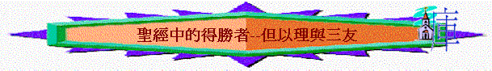

引言：1.在你眼中，何謂「得勝的基督徒」？
2.啟2：26及3：4-5暗示得勝的信徒有哪兩方面特點？
3.要在這世代中，做到以上兩方面的特點，難不難？為何？
＊ 在但以理書中題及四位聖徒：但以理、沙得拉、米煞、亞伯尼歌，他們的確能做到以上兩方面的得勝，＊ 我們嘗試仔細查考他們種種不利環境下如何作得勝的信徒，以致成為我們效法的榜樣。
個人讀經：但1：1-21；3：1-30 (5mins)
小組查經 (50mins)
一﹒理解背景（但1：1-7）
但以理及其三友是什麼民族的人？為何在巴比倫地（巴比倫＝迦勒底）？猶大國發生了什麼事情？他們現在的身份是什麼？作什麼職業？（可參考代下36：5-7；17-20）
二﹒查考內容
1.但以理：不玷污自己(但1：5-21)
a. 尼布甲尼撒王對當時被擄的宗室和貴胄(音宙，指後代人)好不好？ 何以見得？按世人來看，用王的膳和飲王的酒有沒有不妥的地方？應不應該用？
b.對猶太人，神的選民來看，應不應該用這些膳食？為什麼？（可參考出34：15；結4：13）
c.但以理對此挑戰，第一個反應是怎樣？為何他不用王膳？ 吃了飲了會怎樣？
d.如代入但以理，要作出這個立志不玷(音店)污自己，不用王的膳和飲王的酒，難不x難？ 為什麼？
e.在實際生活中，有沒有一些事情眾人以為美的事，人人都這樣做，但你自己心裏覺得是會「玷污自己」？ 請舉例，有沒有試過立志不跟隨、不玷染？做不做到?
e.太監長又有什麼回應？ 但以理又如何對答？ 從這對答中，表明他在難處、挑戰中，裏頭還有什麼值得我們效法的地方？
f.結果，但以理立志不玷污自己是否做不到？為何能做到？神又怎樣賜福給但以理和三友？
3. 三友們：守主道到底（但3：1-30）
a.尼布甲尼撒王做了一個什麼東西？頒佈了什麼命令？違命要怎樣？
b.三友如果拜那像，和信仰有什麼抵觸？
c.如果我們是三友，不下拜時，會遇到那一方面的壓力、挑戰或損失？
d.在生活中、學業中，有否遇到以上類似信仰的挑戰與壓力？試分享。
e.當三友被發現沒拜像，王以扔入火搖威脅之，他們反應如何？有那幾方面值得我們效法？
f.三友對王說：「我們決不事奉你的神」 (3：18)「決不」表明對拜偶像的態度是怎樣？如果有信徒他的決心沒有這般大，他可以怎樣答王/可以有其他什麼態度？
g.試分享一些在信仰中的挑戰，嘗試過「決不」的經歷與學習例子？
h.他們這種「決不 」「 …即或不然」的心態是否一剎那？ 開始到末了是否仍堅持，何以見得？
i.最後，當他們這樣持守後，結果如何？又帶來什麼美好結果？
總結：
1. 得勝的但以理及其三友在挑戰中仍能不玷污自己，仍能持守主的道到底，基於什麼原因？(可多過一個)
2. 從他們得勝的表現上，叫我學到什麼功課？ 那方面最深刻？試分享
祈禱：(5mins)
分享自己在今次查經中的立志(可改善或做得更好的地方)，後互相祈禱支持。